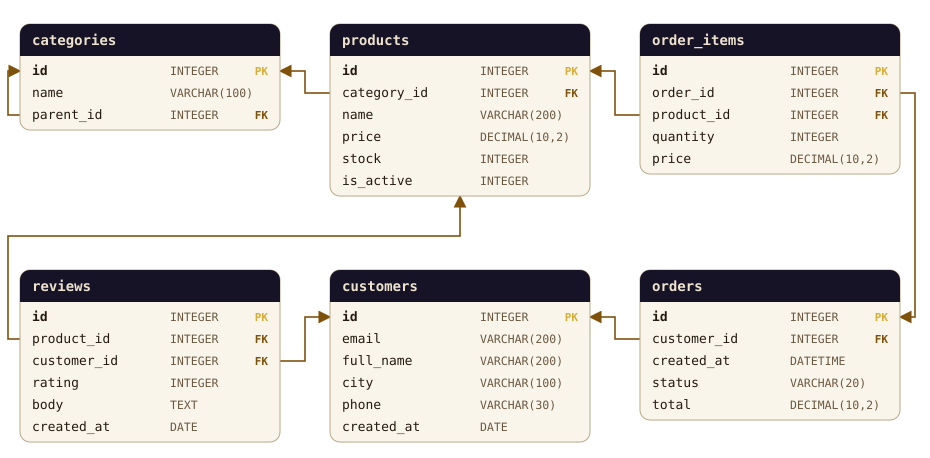

SQL-песочница для тестировщиков
Учебная база интернет-магазина прямо в браузере. Пишите запросы, меняйте данные и ищите баги – кнопка вернет базу к исходной.
- SQLite в браузере
- 6 таблиц, 271 строка
- Без регистрации, база живет в этой вкладке
Запрос к базе
Схема базы
PK – первичный ключ, FK – внешний ключ. Стрелка идет от внешнего ключа к таблице, на которую он ссылается: по этим парам и пишут JOIN. Например, orders.customer_id связывает заказ с покупателем.

Где тот же запрос даст другой ответ
Песочница считает на SQLite. На работе чаще встретятся PostgreSQL или MySQL, а задания на Stepik проверяет MySQL 8.0. Почти все запросы работают одинаково на всех трех, но в строках ниже ответы расходятся. Колонка SQLite снята прогоном здесь, MySQL и PostgreSQL описаны по документации и настройкам по умолчанию.
Что переписывается само
Чтобы запросы, написанные под MySQL, выполнялись на SQLite, песочница перед запуском заменяет четыре конструкции и показывает, во что переписала запрос. Остальное выполняется как написано.
Учиться SQL на задачах из работы тестировщика – курс "Рабочий день тестировщика: тренажер по SQL и задачи на практике" на платформе Rusau Learn.